El launcher de Minecraft con alma de oni: instancias en un clic, mods de Modrinth, cosméticos 3D, amigos, chat y tu propio cliente con módulos.
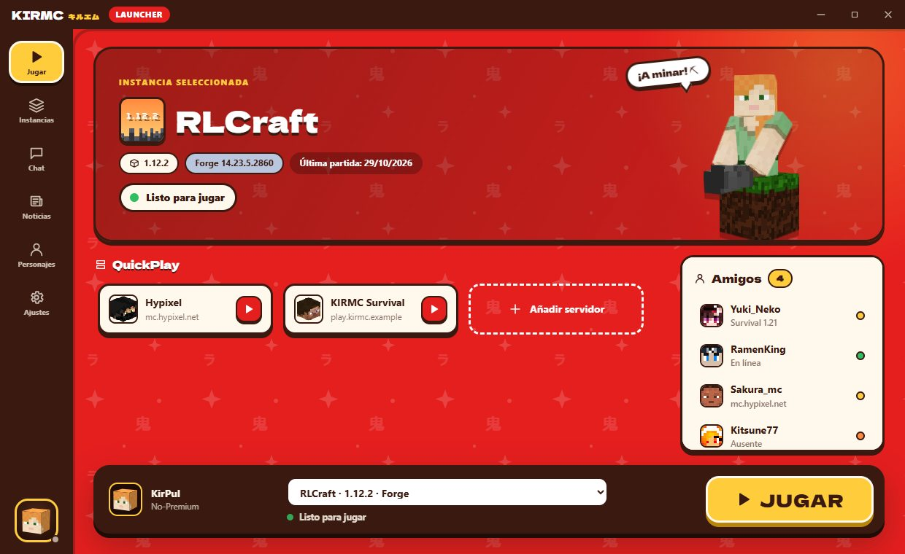
Todo lo que necesitas para jugar Minecraft, en un programa rápido y bonito.
Vanilla, Forge, Fabric y Quilt. Cada instancia con sus mods, mundos y ajustes, y Java automático.
Busca e instala mods, shaders, resource packs y modpacks completos, con sus portadas reales.
Inicia sesión con Microsoft o juega sin cuenta, con skins y capas que sí se ven (skinfix).
25 cosméticos originales de temática japonesa que se ven dentro del juego.
Agrega amigos, mira quién está jugando y chatea en tiempo real, con notificaciones.
Cuando sale una versión nueva, KIRMC te avisa y se actualiza solo con un clic.
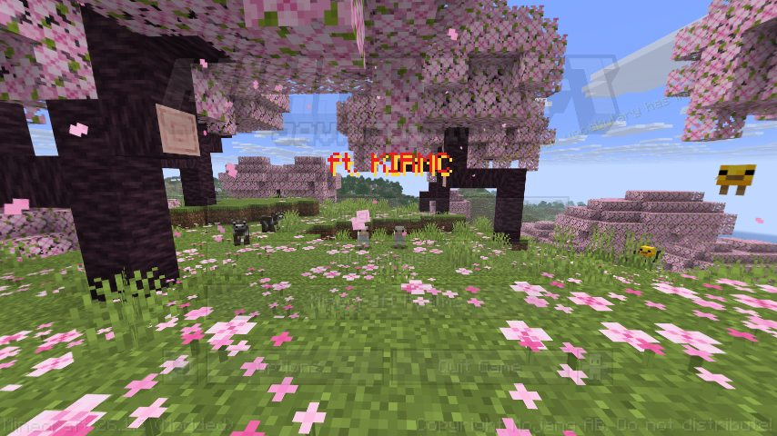
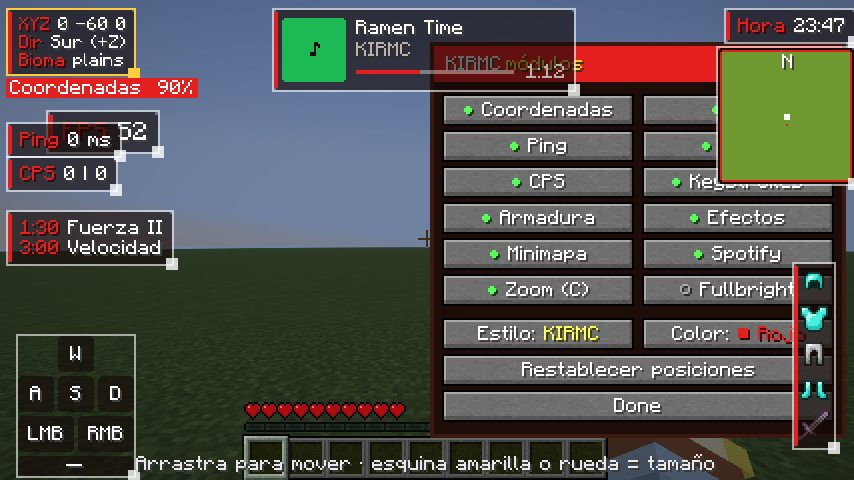
Una instancia propia con el menú «Minecraft ft. KIRMC». Pulsa Shift derecho y coloca cada módulo donde quieras.
Cuernos de oni, kabuto, alas, katanas, colas de kitsune… Gana 10 K coins cada día y cómpralos en el launcher. Los demás jugadores con KIRMC los ven en el juego.
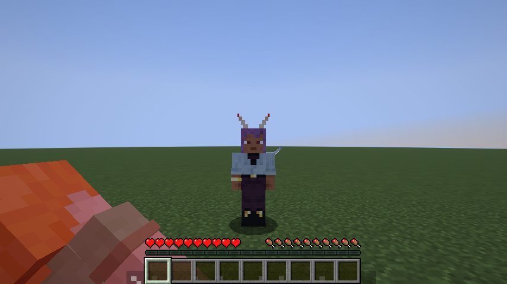
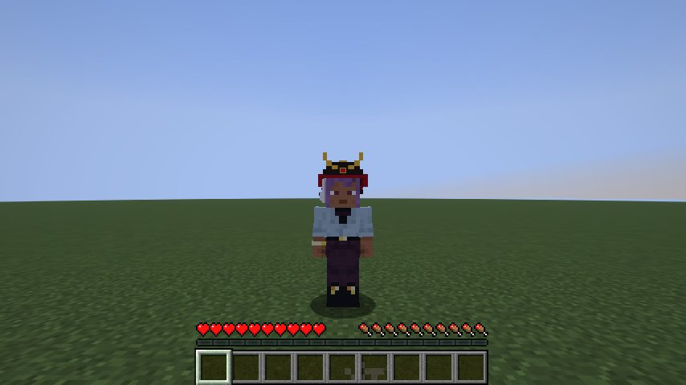
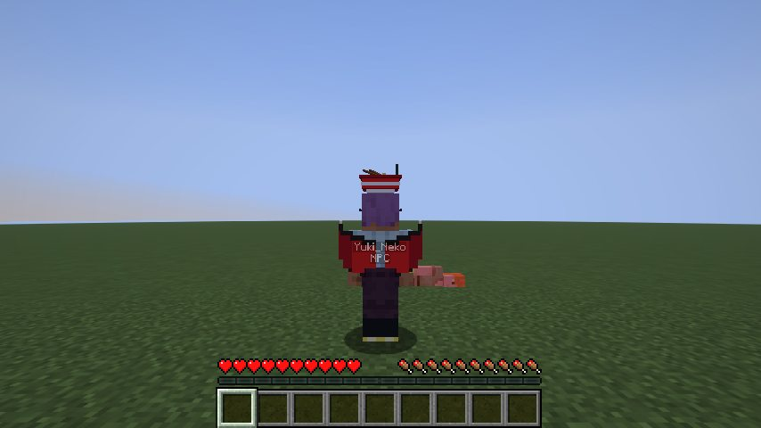
Cuatro temas, animaciones suaves y sonidos de Minecraft. En español, inglés y japonés.
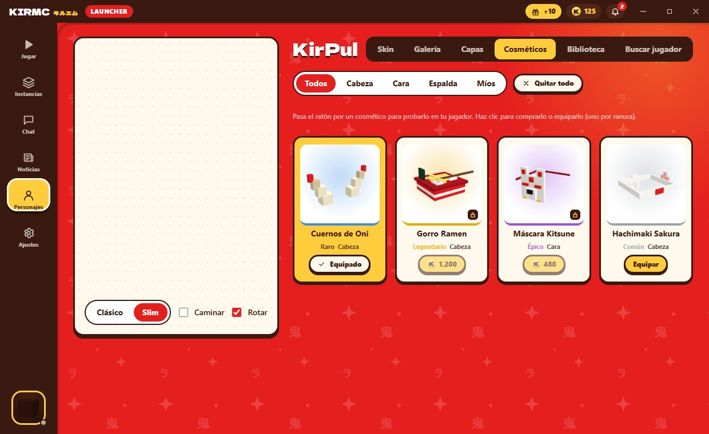
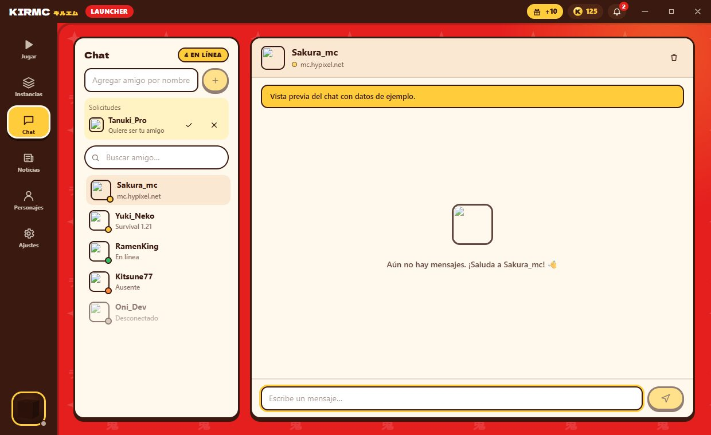
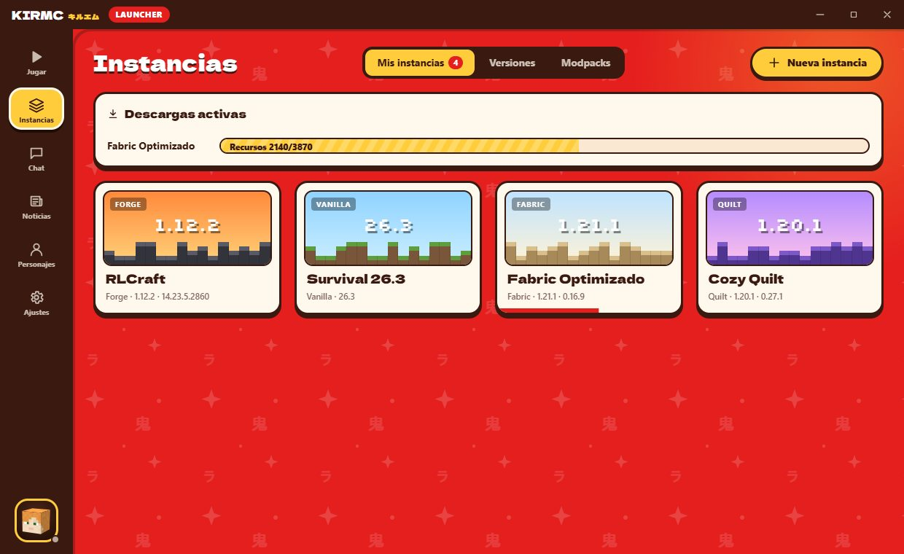
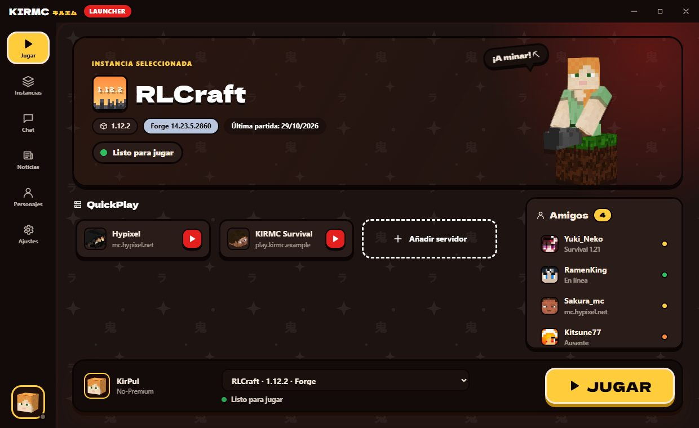
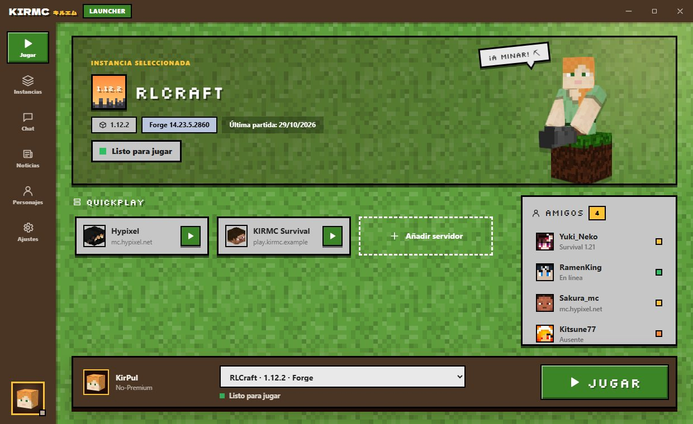
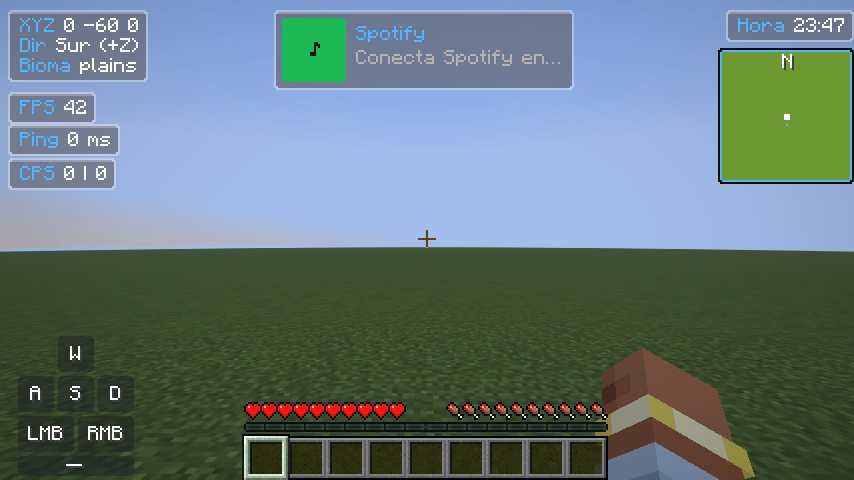
Descarga KIRMC Launcher, crea tu primera instancia y a jugar.
Descargar v0.9.0Sí. KIRMC Launcher es gratis. Las K coins se ganan jugando cada día.
Es normal en programas nuevos sin firma de Microsoft. Pulsa «Más información» y «Ejecutar de todas formas». El código está en GitHub.
Puedes entrar con tu cuenta de Microsoft (premium) o jugar en modo no-premium. Para amigos, chat y K coins necesitas una cuenta KIRMC gratuita.
Solo. Cuando hay una versión nueva, el launcher muestra un aviso con el botón «Actualizar».